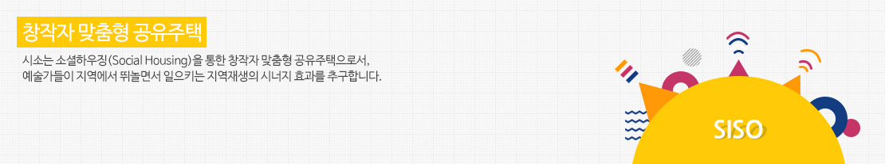
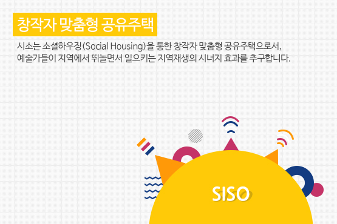
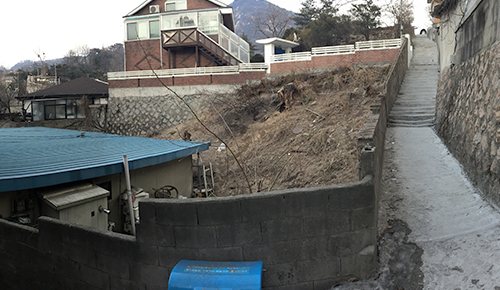
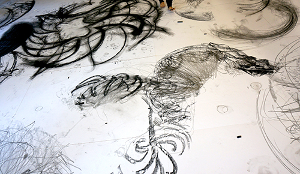
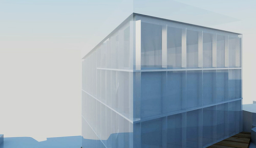
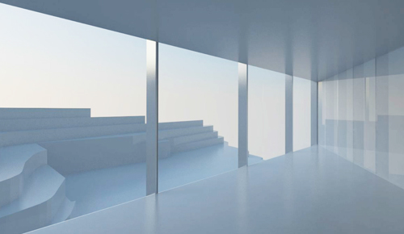

시소주택


공연과 교육 등 수익사업을 해도, 창작자 한 사람의 힘으로 이어가기에는 부족해서, 생계와 작품활동이 분리된 채 생활하다가 활동을 포기하는 경우가 다반사입니다.
사용자 간 교류가 부족했던 기존의 예술가 레지던스의 한계를 극복하여, 창작자들은 시소에서 지역주민과 함께 활동하며 생산품의 판로를 확보하고, 타 분야의 창작자들과 소통하며 다양한 활동의 가능성을 무한히 넓혀갑니다.



